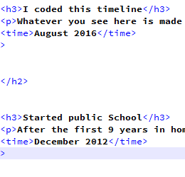

Timeline by Jordan Bush
2001
-
Birth
This is my beginning! Nothing much besides a normal birth. 21 inches and 8 pounds 4 ounces. That started my life

2006
-
I got my first PC
When I was old enough to know some decent sense so I used it to learn the ins and outs of tweaking a PC. That started my computer interest

-
I started homeschool
I started school from home, because my mom liked the idea of it, it was good back then. But it kind of got out of wack by 7th or 8th grade becuase I kept getting subjects I didn't understand.

2013
-
Made my first successful app
2 years into coding and I recieved my first Android tablet a month prior, being me I wanted to learn how to design my own apps. I began thinking of ideas while playing minecraft(my favorite game at that time), and then it hit me. I need to make a minecraft server I can run on my tablet!

2015
-
Started public School
After the first 9 years in homeschool, some how I wound up here by personal choice.

2016
-
I coded this timeline and you are looking at it now
Whatever you see here is made with 1s and 0s. Just kidding! its simpler than most people belive.
